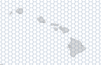
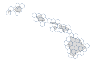
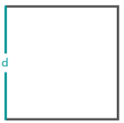
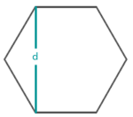
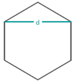
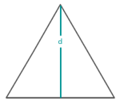
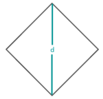

Công cụ này tạo ra các lưới tổ ong trên một khu vực nghiên cứu dựa trên hình dạng và kích thước quy định.
Hộp chọn Sử dụng phạm vi bản đồ hiện tại được bỏ chọn đối với công cụ này bởi vì phạm vi được sử dụng để tạo lưới tổ ong do thông số Xác định phạm vi kiểm soát.
Hình dạng hoặc hình học của lưới tổ ong bạn muốn tạo. Các hình dạng có sẵn là Hình vuông, Hình lục giác, Hình lục giác ngang, Hình tam giác hoặc Hình thoi.
Phạm vi hoặc khu vực mà các lưới tổ ong sẽ bao trùm. Có thể xác định phạm vi bằng cách sử dụng phạm vi bản đồ hiện tại, phạm vi của một lớp hiện có hoặc bằng cách tương tác vẽ một khu vực sẽ sử dụng làm phạm vi.
Nếu bạn đã chọn một lớp đối tượng để xác định phạm vi thì tùy chọn chỉ giữ các lưới tổ ong giao nhau sẽ được bật. Nếu được chọn, chỉ những lưới tổ ong bao phủ hoặc giao nhau với các đối tượng trong lớp phạm vi được chỉ định mới được tạo trong lớp lưới tổ ong kết quả.
|
Không được chọn |
 |
|
Được chọn |
 |
Kích thước của mỗi ô. Có thể xác định kích thước ô bằng cách chỉ định hình vuông đơn vị hoặc chỉ định khoảng cách được tính bằng các phép đo sau, trong đó d = Khoảng cách:
|
Hình vuông |
 |
|
Hình lục giác |
 |
|
Hình lục giác ngang |
 |
|
Hình tam giác |
 |
|
Hình thoi |
 |
Đây là tên lớp sẽ được tạo trong mục Nội dung của Tôi và thêm vào bản đồ. Nếu lớp đã tồn tại, bạn sẽ được yêu cầu cung cấp tên mới.
Sử dụng chức năng Lưu kết quả trong menu thả xuống, bạn có thể chỉ định tên thư mục trong phần Nội dung của Tôi nơi sẽ lưu trữ kết quả của bạn.